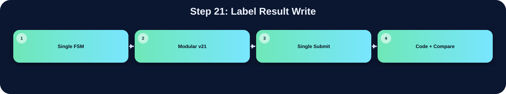

將 label result 寫入 AnsSRAM 或 label map。

此表把本流程在三個版本中的 state/module 與 code 關係整理出來；沒有明確對應者保持空白。
| 版本 | 對應 state / module | 和 code 的關係 |
|---|---|---|
| Single FSM | ||
| Modular v21 | ccl_v21_fast | 把 label 結果寫入 AnsSRAM |
| Single Submit |
在「Label Result Write」流程中，並非三個版本都有獨立而明確的程式段落。Single FSM 版沒有獨立顯示此流程，可能被合併在其他 state 中，或不需要此階段。Modular v21 版有明確對應，主要在 ccl_v21_fast 完成，說明為：把 label 結果寫入 AnsSRAM。Single Submit 版沒有明確獨立此流程，對應原始碼區塊依需求保持空白。這種差異通常來自架構選擇：單一 FSM 會把多個小步驟合併在同一段 state；模組化版本則傾向把功能交給特定子模組；single_submit 則在單檔中保留 module-level 階段。
下方採用下拉式區塊顯示。中文說明放在程式碼上方；原始程式碼本身沒有修改、沒有插入註解。若某份檔案沒有明確對應流程，該程式碼區塊保持空白。
`timescale 1ns/1ps
// ============================================================================
// File : drawBbox_report_style_clean_v1.v
// Module : drawBbox
// Lab : iVCAD Lab7 - Draw Bounding Box
//
// Design summary
// This RTL keeps a single public submit file while separating the image
// processing flow into four hardware stages. The top module is responsible
// only for stage scheduling and SRAM/ROM ownership selection. The arithmetic
// and image-processing operations stay inside their corresponding stage
// modules so that the synthesis tool can optimize smaller logic cones.
//
// Processing flow
// 1. threshold_v21_fast : RGB-to-gray conversion, 3x3 Gaussian smoothing,
// histogram accumulation, and Otsu threshold search.
// 2. polarity_v21_fast : foreground polarity decision using the number of
// pixels above/below the selected threshold.
// 3. ccl_v21_fast : connected-component labeling and equivalence-table
// resolution.
// 4. boxing_v21_fast : bounding-box coordinate extraction and green box
// overlay on the final output image.
//
// Fixed-point arithmetic notes
// Grayscale conversion is implemented as an integer approximation of
// Gray = 0.299R + 0.587G + 0.114B
// using Q16 coefficients:
// Gray = round_even((19595R + 38470G + 7471B) / 65536)
//
// Gaussian smoothing uses the separable 3x3 kernel
// [1 2 1; 2 4 2; 1 2 1] / 16
// and is implemented with shifts and additions instead of multipliers.
//
// Otsu score comparison avoids direct division in the critical comparison by
// using cross multiplication:
// score(T) = numerator(T) / denominator(T)
// score(a) >= score(b) <=> numerator(a)*denominator(b)
// >= numerator(b)*denominator(a)
//
// Interface note
// The external top-module name and ports are intentionally unchanged so the
// original Lab7 testbench can instantiate this design without modification.
// ============================================================================
module drawBbox (
input clk, // 系統時脈輸入
input rst, // 同步或非同步重置信號
input enable, // 啟動整體影像處理流程
output done, // 輸出完成旗標
// ImgROM
input [31:0] Img_Q, // ImgROM 讀回的 32-bit RGB pixel
output Img_CEN, // ImgROM 低有效 chip enable
output reg [15:0] Img_A, // ImgROM 讀取位址
// UrSRAM
input [31:0] Ur_Q, // UrSRAM 讀回資料
output Ur_CEN, // UrSRAM 低有效 chip enable
output Ur_WEN, // UrSRAM 讀寫控制，0 為寫入、1 為讀取
output [15:0] Ur_A, // UrSRAM 存取位址
output [31:0] Ur_D, // UrSRAM 寫入資料
// AnsSRAM
input [31:0] Ans_Q, // AnsSRAM 讀回資料
output Ans_CEN, // AnsSRAM 低有效 chip enable
output Ans_WEN, // AnsSRAM 讀寫控制，0 為寫入、1 為讀取
output [31:0] Ans_D, // AnsSRAM 寫入資料
output [15:0] Ans_A // AnsSRAM 存取位址
);
// ---------------------------------------------------------------------------
// Top-level stage controller
// The top FSM grants memory ownership to exactly one processing stage at a
// time. Each stage receives a one-cycle start pulse only after the FSM has
// entered that stage, preventing a submodule from using a stale bus owner.
// ---------------------------------------------------------------------------
localparam ST_IDLE = 3'd0; // FSM 狀態或常數參數宣告
localparam ST_THRES = 3'd1; // FSM 狀態或常數參數宣告
localparam ST_POL = 3'd2; // FSM 狀態或常數參數宣告
localparam ST_CCL = 3'd3; // FSM 狀態或常數參數宣告
localparam ST_BOX = 3'd4; // FSM 狀態或常數參數宣告
wire box_done; // bounding-box stage 完成旗標
reg [2:0] state, next_state; // 目前 top FSM 狀態
reg [2:0] state_d; // 前一拍 top FSM 狀態，用於產生 start pulse
always @(posedge clk or posedge rst) begin
if (rst) begin
state <= ST_IDLE;
state_d <= ST_IDLE;
end else begin
state_d <= state;
state <= next_state;
end
end
// Stage-aligned one-cycle start pulses.
// A pulse is generated on the first cycle after the top controller changes
// stage, so the memory mux and control path are already consistent.
wire start_thres = (state == ST_THRES) && (state_d != ST_THRES); // 子模組 one-cycle start pulse 控制信號
wire start_pol = (state == ST_POL) && (state_d != ST_POL); // 子模組 one-cycle start pulse 控制信號
wire start_ccl = (state == ST_CCL) && (state_d != ST_CCL); // 子模組 one-cycle start pulse 控制信號
wire start_box = (state == ST_BOX) && (state_d != ST_BOX); // 子模組 one-cycle start pulse 控制信號
// ---------------------------------------------------------------------------
// Stage 1: grayscale, Gaussian filter, histogram, and Otsu threshold search
// ---------------------------------------------------------------------------
wire [7:0] threshold; // Otsu 計算後的 8-bit threshold